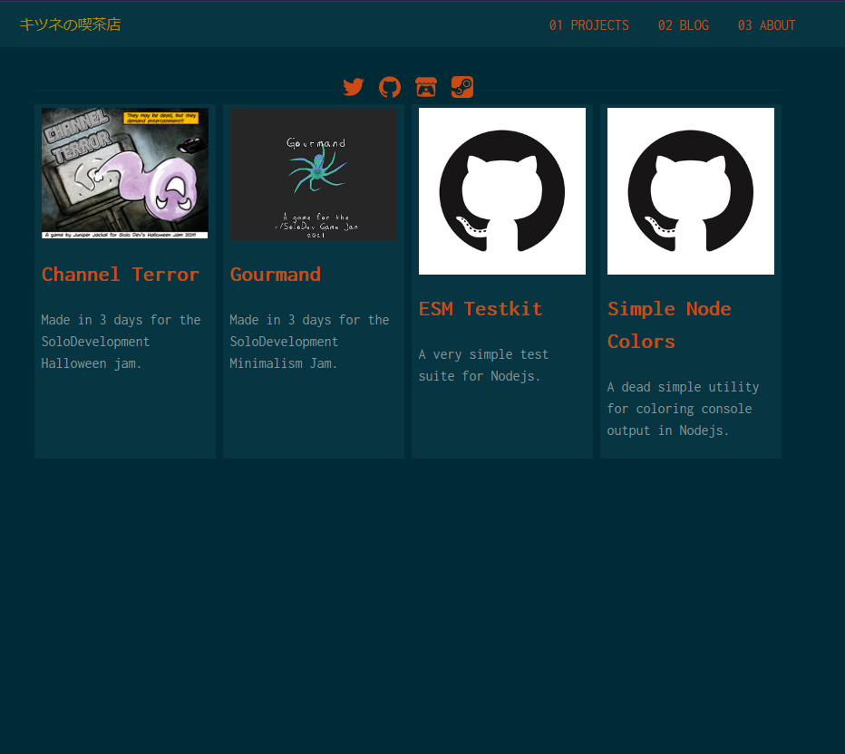

Blood of Yamin
A metroidvania RPG that I assisted with development.
OpenPacker
A fork of Free Texture Packer

Beef's Adventure
An HTML5 Platformer made in two weeks for my wife

45 Day Roguelike
A roguelike made in 45 days for fun and practice.

t3.js
A fork of Three.js' editor with added features for game development.
kitsu.cafe
Made with Gatsby over a weekend.

Gourmand
Made in 3 days for the SoloDevelopment Minimalism Jam.

Channel Terror
Made in 3 days for the SoloDevelopment Halloween jam.

ESM Testkit
A very simple test suite for Nodejs.
Simple Node Colors
A simple utility for coloring console output in Nodejs.